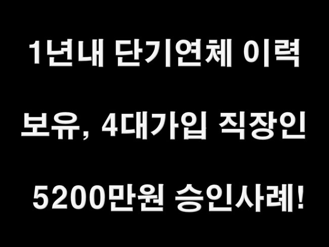
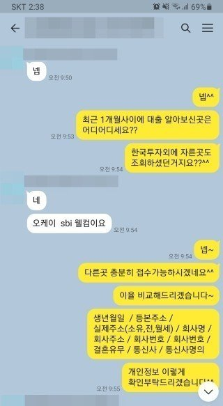
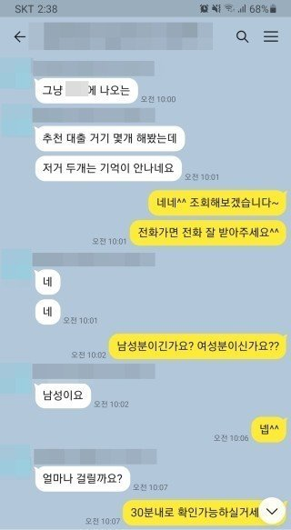
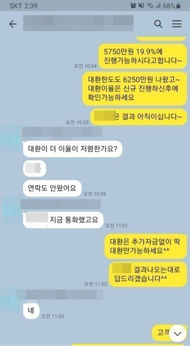
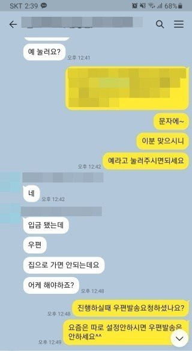

1년내 단기연체이력 보유, 4대가입 직장인 5200만원 승인사례!

안녕하세요^^ 뱅크앤론 상담사 유미광 과장입니다^^ 오늘은 제가 진행해드린 김** 고객님의 대출 사례를
소개해 드리겠습니다. 김** 고객님께서는 현 직장에 6년째 근무중이시며, 연봉5400만원의 4대보험 가입 직
장인이셨습니다. 사용중이신 대출로는 리드코프 1000만원으로 소득대비 기대출이 적으셨지만, 문의 주시기
4개월 전까지도 단기연체를 많이 하셨다고하셨습니다. 갑자기 목돈이 필요하셔서 고객님께서 직접 이곳 저
것 알아보셨고, 대출 한도도 나왔지만 이율이 생각하시던것 보다 높아서 경험많은 뱅크앤론쪽으로 문의 주
신다고하셨습니다. 이에 저는 연체이력이있음에도 금리가 잘나왔던 금융사 2곳을 선정하여 조회해드린 결
과, 한 금융사에서 5950만원 19.9%에 가능하시다는 결과를 받으셨고, 고객님께서필요하셨던 5200만원을 진
행하셨습니다. 이에 김** 고객님께서도 매우 만족하셨습니다. 자세한 사항은 아래 저와 김**고객님의 카톡
대화 내용을 참고하실 수 있습니다. 감사합니다^^



